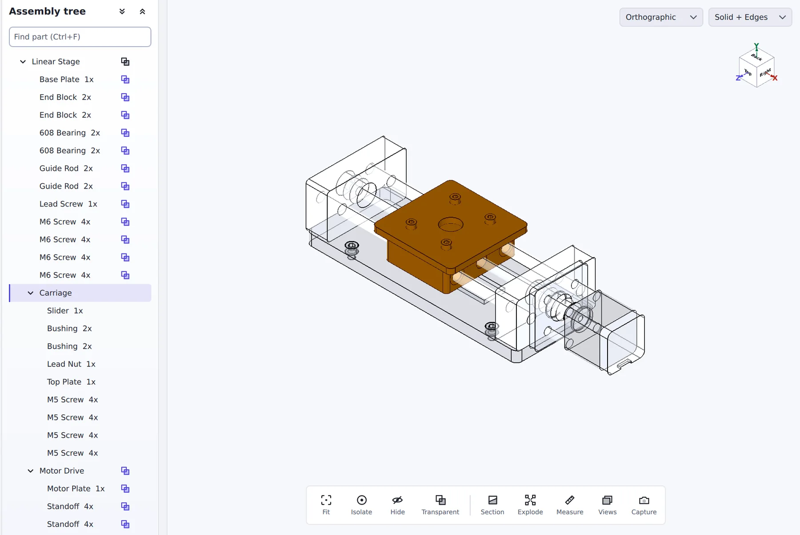
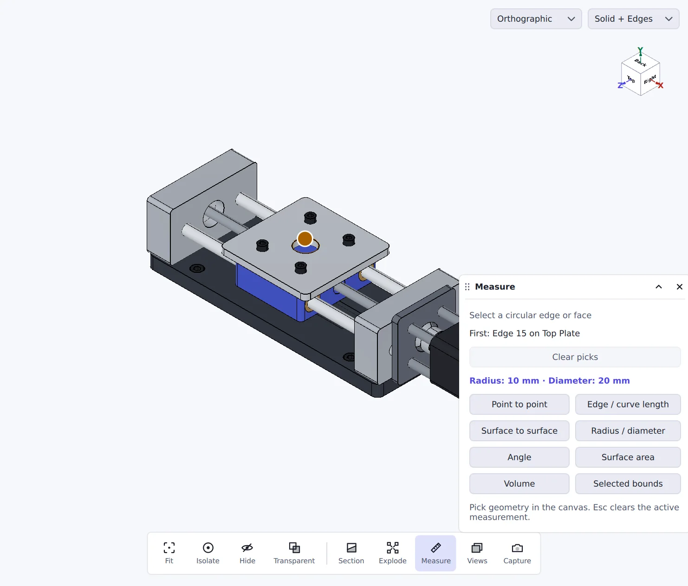
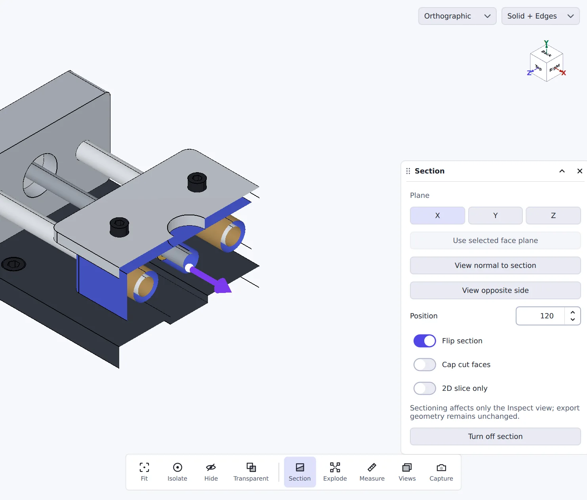
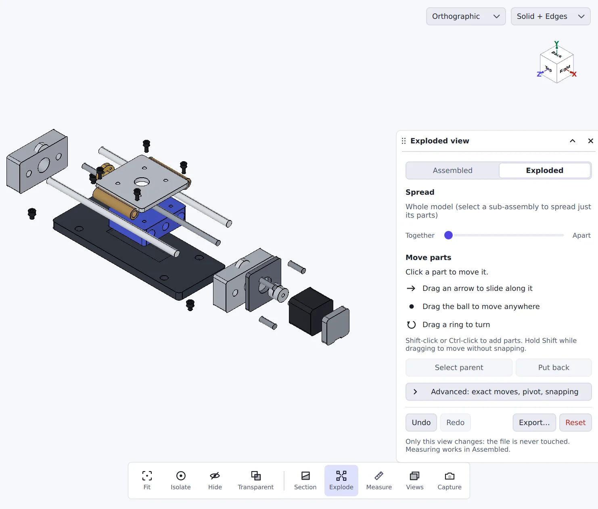
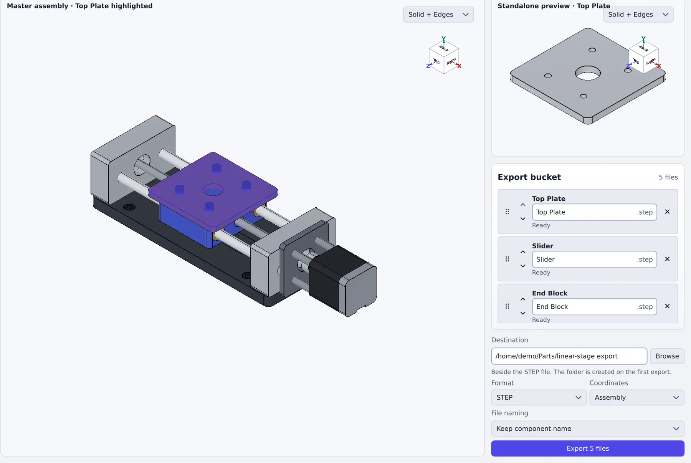
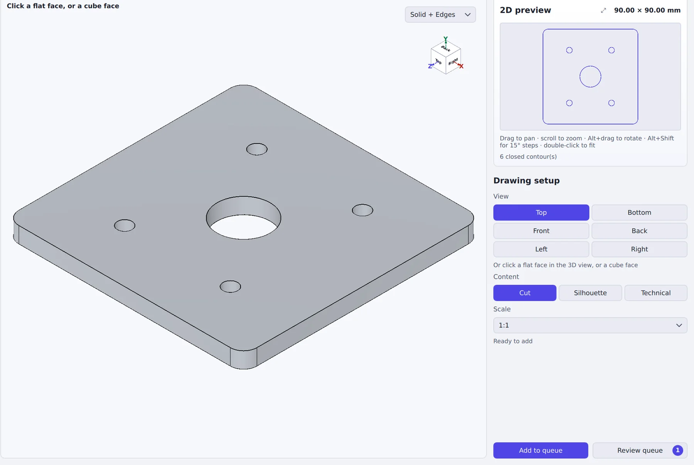

See how it's put together
The whole assembly in a tree you can search. Select a part to isolate it, hide what's in the way, or ghost everything else.

Open a STEP file someone sent you, understand it, and pass on exactly what the next person needs.
The whole assembly in a tree you can search. Select a part to isolate it, hide what's in the way, or ghost everything else.

Click edges and faces for distances, radii, angles, area and volume. Loupe highlights what you're about to pick.

Cut the model on any axis or face and slide the cut through it, to see bores, bushings and wall thickness.

Explode the assembly with one slider, or drag parts out by hand. Save the layout as STEP, STL or a drawing.

Tick the parts a vendor needs and export each as its own STEP or STL file, named your way. Or strip parts out and save the rest as one assembly.

Turn a part into a true 1:1 DXF, SVG or PDF with real arcs and circles, for laser, waterjet or a quote. Check each one before you cut.

Free for macOS and Windows. Your files stay on your computer.